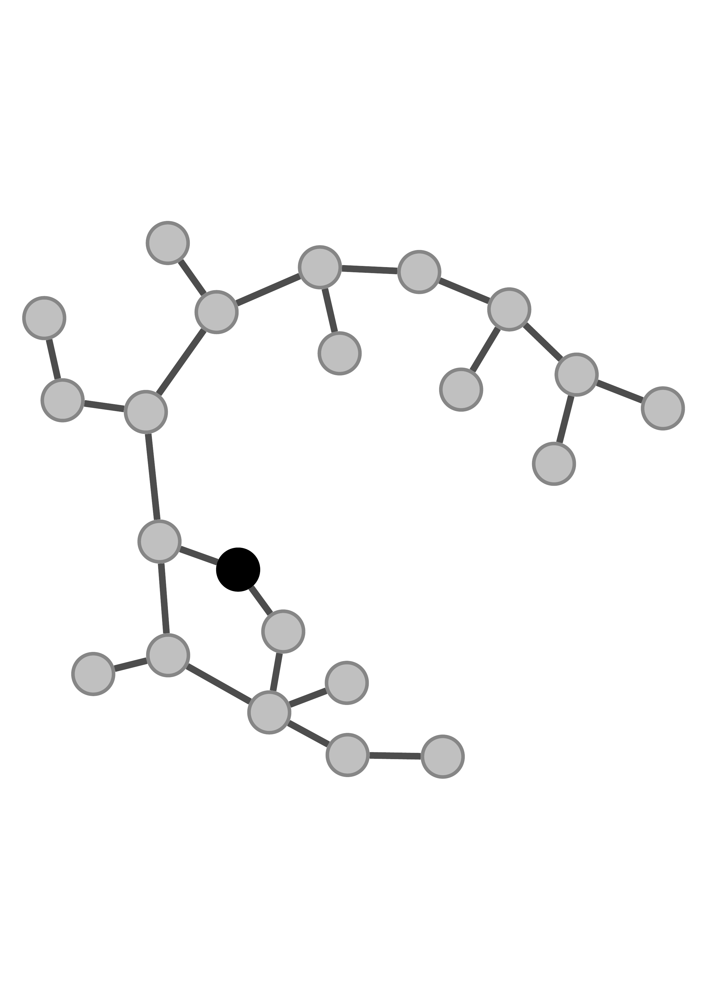
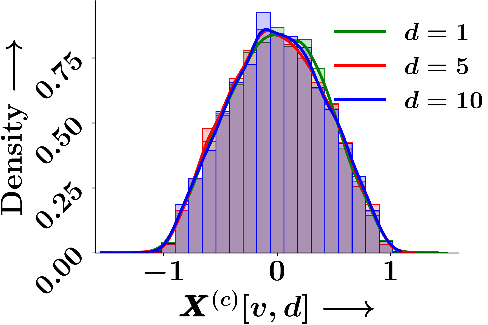
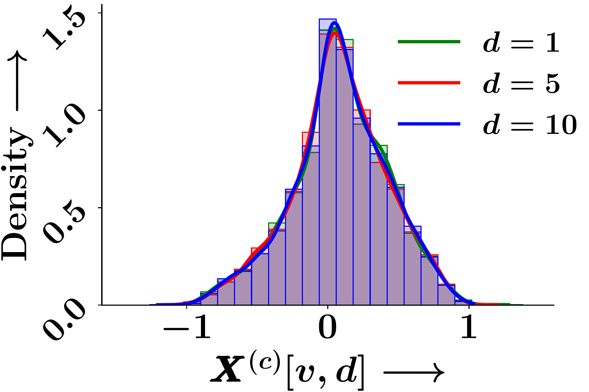
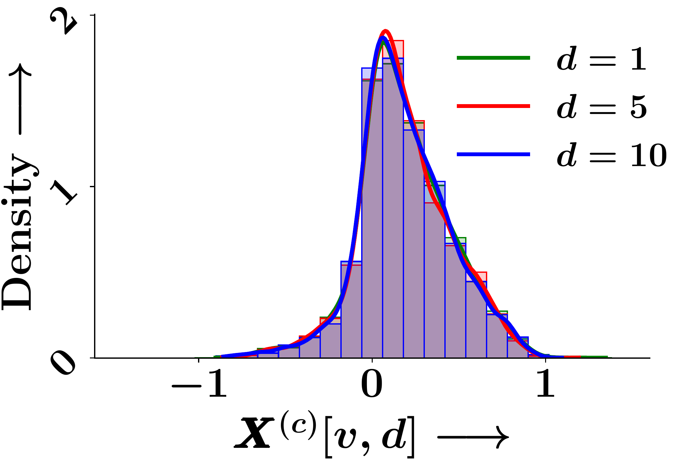
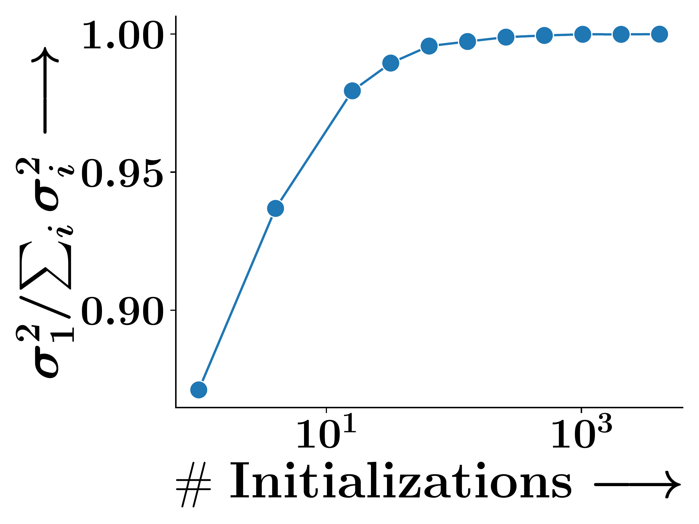
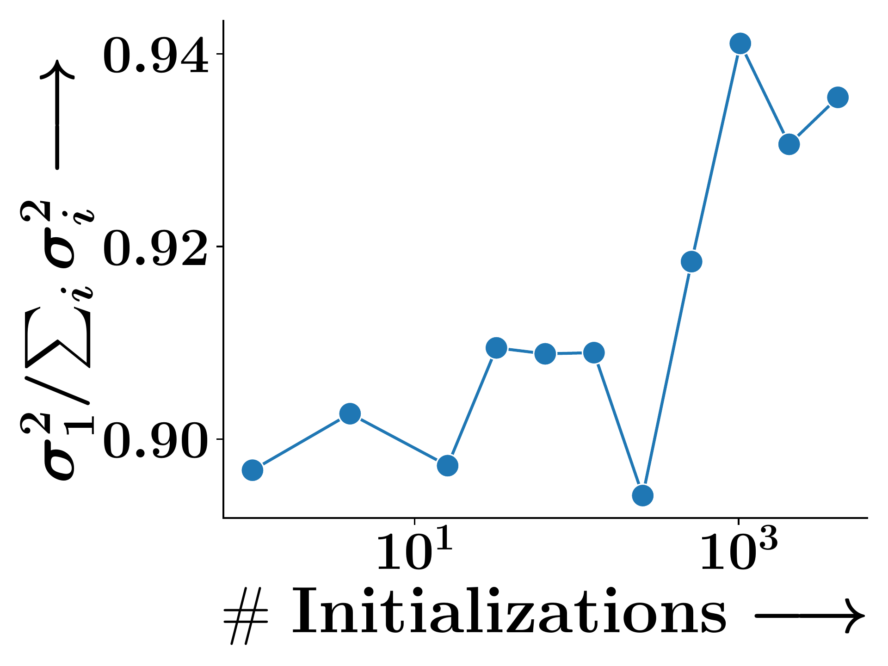
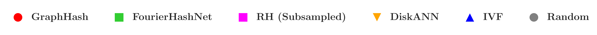

Abstract
We discover a probabilistic symmetry, called exchangeability, in graph neural networks (GNNs). Specifically, we show that the trained node embeddings computed using a large family of graph neural networks, learned under standard optimization tools, are exchangeable random variables. This implies that the probability density of the node embeddings remains invariant with respect to a permutation applied on their dimension axis. This results in identical distribution across the elements of the graph representations. Such a property enables approximation of transportation-based graph similarities by Euclidean similarities between the sorted embedding elements in fixed dimension. This allows us to propose a unified locality-sensitive hashing (LSH) framework that supports diverse relevance measures for graphs. Experiments show that our method provides more effective LSH than baselines.
A New Axis of Symmetry in Neural Representations
We discover that trained GNN embeddings exhibit exchangeability—a probabilistic symmetry where the joint distribution $p(\mathbf{X}) = p(\mathbf{X}\boldsymbol{\pi})$ is invariant under any permutation $\boldsymbol{\pi}$ applied to the dimension axis. If a GNN produces a $D$-dimensional embedding for each node, all $D$ coordinate values share the same marginal distribution. This is not a symmetry of the input data or the architecture—it is a symmetry in the neural representation space itself.
A dimension permutation $\boldsymbol{\pi}$ rearranges the embedding coordinates of every node identically—the joint distribution remains unchanged.
The Mechanism
How does exchangeability arise? We trace it to three conditions that hold for a large family of GNNs trained with standard optimizers:
1. Permutation-induced parameter transformations. For any dimension permutation $\boldsymbol{\pi}$, there exists a bijective transformation $\Gamma_{\boldsymbol{\pi}}$ on the network parameters that induces the corresponding permutation on embeddings: $\mathbf{X} \mapsto \mathbf{X}\boldsymbol{\pi}$. This transformation has unit Jacobian determinant.
The bijective transformation $\Gamma_{\boldsymbol{\pi}}$ permutes weight columns/rows so that the output embeddings undergo the same dimension permutation.
2. Symmetry at initialization. IID parameter initialization ensures $p(\theta_0) = p(\Gamma_{\boldsymbol{\pi}}(\theta_0))$ for all permutations $\boldsymbol{\pi}$. All permuted parameter configurations are equally likely at the start.
3. Gradient and Optimizer Equivariance. Since the loss function (transportation distance) is permutation-invariant, the gradient is equivariant under $\Gamma_{\boldsymbol{\pi}}$. If parameters start as $\Gamma_{\boldsymbol{\pi}}(\theta_0)$, gradient updates also undergo the same transformation. So $p(\theta_t) = p(\Gamma_{\boldsymbol{\pi}}(\theta_t))$ for all training epochs $t \ge 0$.
Gradient equivariance: the backward pass preserves the permutation symmetry established at initialization.
Together: exchangeability of parameters at initialization is preserved throughout training and propagates to the embeddings.
Some Implications

Graph

Epoch 0

Epoch 8

Epoch 20
Figure 1. Empirical probability density of individual GNN embedding dimensions across training epochs. The marginal distributions remain identical at initialisation and throughout training.

(a) Cox2 (SM)

(b) Cox2 (GED)
Figure 2. The ratio $\sigma_1^2 / (\sum_i \sigma_i^2)$ of the top singular value converges to 1 across training, confirming that $\mathbb{E}[\mathbf{X}]$ collapses to rank one—a consequence of exchangeability.
The Graph Retrieval Problem
Finding the most similar graphs in a large corpus is a fundamental problem in cheminformatics, social network analysis, and program analysis. Recent work has shown that transportation-based similarities—which compute optimal alignments between node embeddings of two graphs—significantly outperform simpler aggregation methods and graph kernels. These distances unify multiple relevance measures: the hinge cost $\rho(\cdot) = [\cdot]_+$ captures subgraph isomorphism, while asymmetric costs $\rho(\cdot) = c_{\ominus}[\cdot]_+ + c_{\oplus}[-\cdot]_+$ capture graph edit distance.
However, exact computation requires solving an optimal assignment over $n$ nodes, scaling as $O(n^3)$. Even Sinkhorn approximations need $O(n^2)$ per comparison. The challenge: transportation distances cannot be decomposed into independent per-node comparisons and readily separated into corpus and query terms. This makes standard indexing (LSH, IVF) inapplicable.
From Transportation to Sorting
Exchangeability unlocks an elegant computational shortcut. By restricting the transportation problem to a single dimension $d \in [D]$, it reduces to optimal transport between scalars—trivially solved by sorting (the rearrangement inequality). Since the score function $s(\cdot)$ is concave, the per-dimension similarity simplifies to: $\mathrm{sim}_d(G_c, G_q) = s\big(\mathrm{sort}(\mathbf{X}^{(q)}[:,d]) - \mathrm{sort}(\mathbf{X}^{(c)}[:,d])\big)$.
Because exchangeability yields an identical distribution of the per-dimension similarity across all $D$ dimensions, we get concentration:
Proposition. For any $\epsilon > 0$, $\delta > 0$, setting $D > \frac{1}{\epsilon^2 \delta}$ ensures that, for some $\beta_0 = O_D(1)$:
$$\Pr\left(\left| \frac{\mathrm{sim}(G_c, G_q)}{D} - \mathrm{sim}_d(G_c, G_q)\right| \le \epsilon\right) \ge 1 - \beta_0 \delta$$
This reduces the $O(n^3)$ transportation problem to $D$ independent $O(n \log n)$ sorting problems. Each dimension's sorted embedding vector is then projected into Fourier space and hashed using standard random hyperplane LSH, with per-dimension hash tables aggregated for retrieval. This is the first principled LSH framework for asymmetric transportation-based similarities.

Figure 3. Overview of the GHash framework. Exchangeability enables per-dimension sorting to approximate transportation distances; Fourier-based LSH with multiple hash tables enables sublinear-time retrieval.
Results
We evaluate on four TUDatasets (COX2, PTC-FM, PTC-FR, PTC-MR) with 500 query graphs and 100,000 corpus graphs each, measuring MAP under subgraph matching (SM, via VF2) and graph edit distance (GED, insertion cost=1, deletion cost=2).
GHash consistently achieves the highest MAP across all datasets and both tasks. FourierHashNet, the previous best approach, plateaus below 50% MAP on several SM tasks because it relies on mean-pooled representations that discard multi-vector structure. Random Hyperplanes show high variance and poor SM performance. Symmetric methods (FAISS-IVF, DiskANN) are fundamentally incompatible with asymmetric relevance measures like subgraph isomorphism.

Figure 4. MAP vs. #retrieved graphs across four datasets. Toggle between Subgraph Matching and Graph Edit Distance.
BibTeX
@inproceedings{nair2026exchangeability,
title={Exchangeability of {GNN} Representations with Applications to Graph Retrieval},
author={Nair, Kartik and Roy, Indradyumna and Chakrabarti, Soumen and Dasgupta, Anirban and De, Abir},
booktitle={Proceedings of the International Conference on Learning Representations (ICLR)},
year={2026},
url={https://openreview.net/forum?id=HQcCd0laFq}
}View: OpenReview | Poster